A0951 40 帧
zuoci_skill4-animation_
zuoci_skill4-animation_



attacked_elect-animation1_
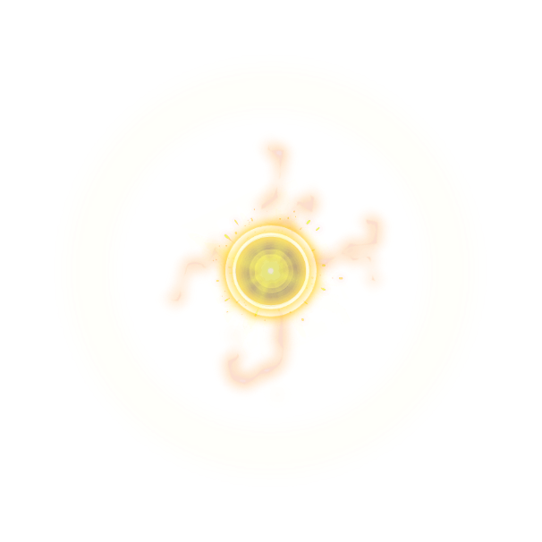
body_electric-animation1_
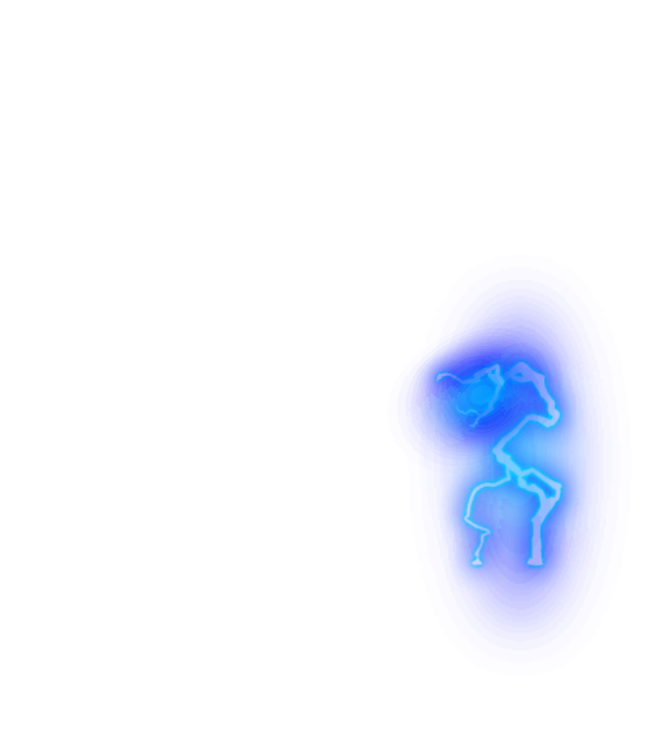
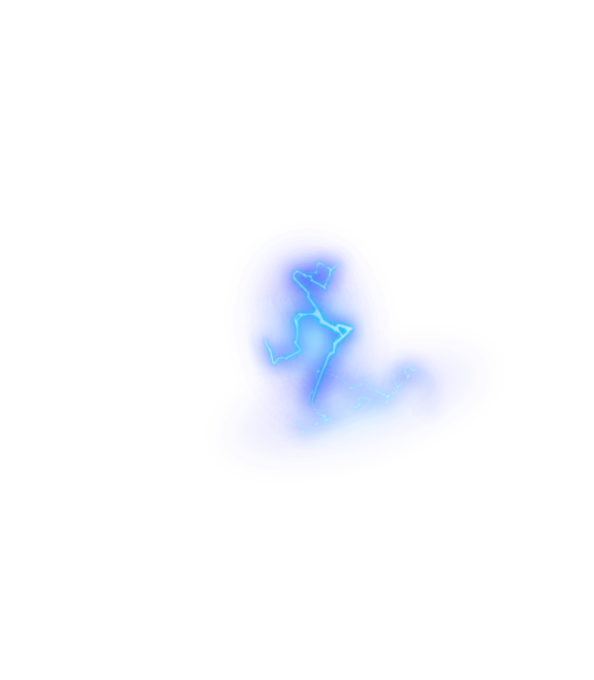
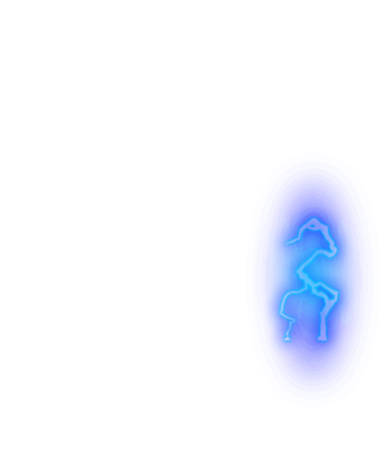
ready_elect-animation1_
shot_elect-animation1_
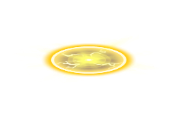
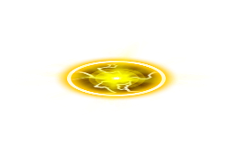
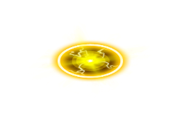
shot_elect_breath-animation1_
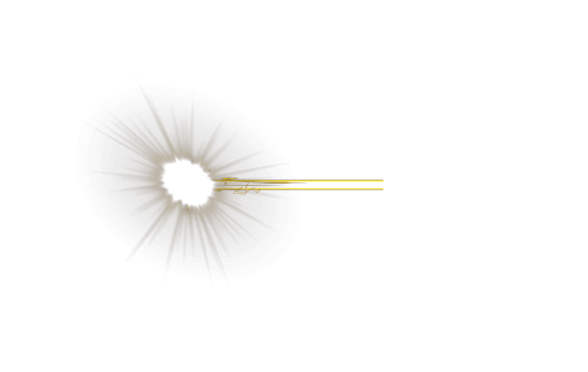
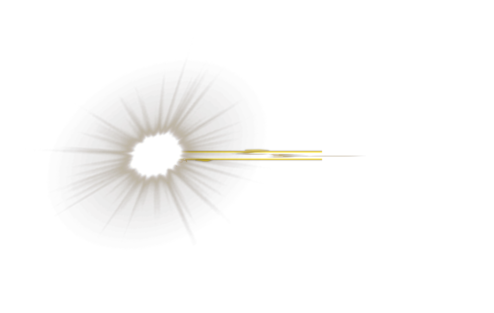
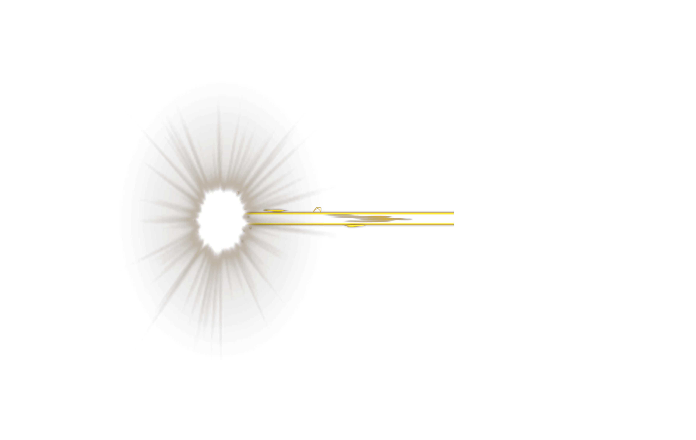